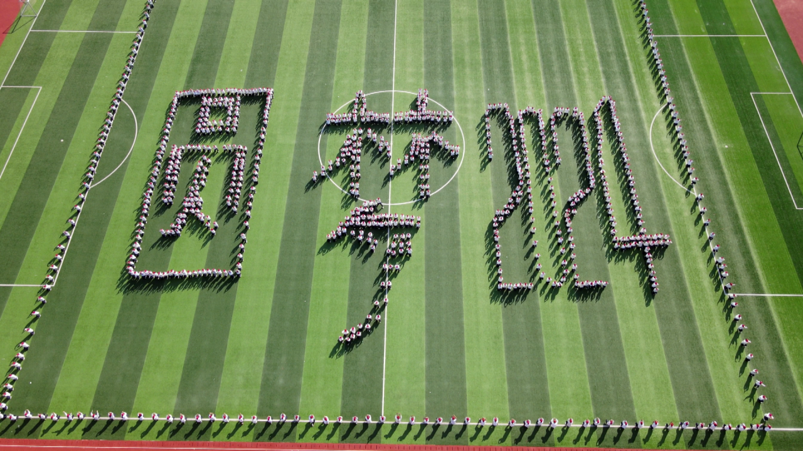

| <--与敬爱的蔡校长亲切握手的lsy 毕业典礼上，面带天真又自信的笑容，穿过状元门，大步奔向明天的zgy和紧随其后的zyh--> |
zyx同学激情澎湃的演讲，掌声雷动 | |||
| 夜色已深，劳累了一天的wg主任仍不辞辛苦，与zyh同学促膝长谈，开导烦恼，爱生如子 | dxh主任的班级合照--> |  |
||
| <--可爱的cxs主任与全班同学共享西瓜盛宴，好吃到无法自拔 所有西瓜均产自瑞昌一中劳动教育基地，土生土长，绝对健康，不含任何农药，令人垂涎欲滴，好想再来一口啊~~ |
||||
| 与民同乐，热辣劲舞的蔡校长，与同学们一起享受这高考前最后的狂欢——接着奏乐接着舞！！！ | ||||
|  | ||||
| <-- 年级部团体操表演，共襄盛举，热闹非凡 | ||||
| <--“十大感动校园人物”颁奖典礼，榜样力量，激人奋进 | 英语课本剧《百万英镑》演出，难忘美丽动人的白月光wcy同学--> | |||